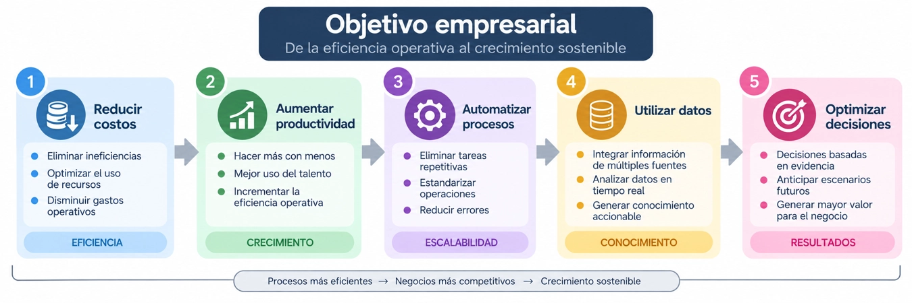
Actualmente, el mercado laboral de ingeniería se encuentra en una etapa de transformación, más que de desaparición de las profesiones tradicionales. Las empresas continúan necesitando ingenieros, pero están cambiando las funciones, herramientas y competencias que esperan de ellos.
A nivel internacional, el World Economic Forum identifica como principales fuerzas de transformación del empleo hacia 2030 el avance tecnológico, especialmente la IA, la transición energética, los cambios demográficos, la incertidumbre económica y las transformaciones geopolíticas. El estudio citado recoge información de más de 1,000 empleadores que representan a más de 14 millones de trabajadores.
Situación actual del mercado laboral de ingeniería
La ingeniería sigue siendo una profesión con una demanda laboral importante. En Estados Unidos, las ocupaciones de arquitectura e ingeniería tienen una proyección de crecimiento superior al promedio de todas las ocupaciones para 2024–2034, con aproximadamente 186,500 vacantes anuales, considerando crecimiento y reemplazo.
| Grupo ocupacional | Crecimiento 2024–2034 |
|---|---|
| Todas las ocupaciones | 3.1% |
| Arquitectura e ingeniería | 5.3% |
| Computación y matemáticas | 10.1% |
Para analizar la demanda, el estudio separa demanda laboral —cuántos trabajadores necesita el mercado y qué tan rápido crece esa necesidad— de empleabilidad —qué tan probable es que una persona consiga y conserve un empleo de calidad—.
Los cinco grandes bloques de demanda
1. Ingeniería digital
Software · Datos · IA / Machine Learning · Cloud · Ciberseguridad · DevOps · Platform Engineering
Digitalización2. Automatización y manufactura avanzada
Industrial · Automatización · Robótica · Mecatrónica · Control · Manufactura avanzada · Sistemas de producción
Industria 4.03. Ingeniería energética
Renovables · Redes eléctricas · Almacenamiento · Baterías · Electrificación · Eficiencia energética
Transición energética4. Infraestructura y construcción
Civil · Estructural · Geotécnica · Transporte · Infraestructura hidráulica · Construcción
Infraestructura5. Ingeniería especializada
Semiconductores · Electrónica · Aeroespacial · Automotriz · Biotecnología · Dispositivos médicos · Telecomunicaciones · Sistemas autónomos
Nichos de alto valorConvergencia entre ingeniería y tecnología
Una característica del mercado actual es la convergencia entre ingeniería y tecnología. El estudio ejemplifica esta combinación con distintos perfiles: ingeniería industrial + análisis de datos + Python + SQL + IA + automatización + simulación + optimización; mecánica + CAD/CAE + simulación + automatización + robótica; eléctrica + electrónica + automatización + sistemas inteligentes + energía; civil + BIM + sensores + modelado digital + análisis de datos; y sistemas + software + cloud + datos + IA + ciberseguridad.
Influencia de la inteligencia artificial
La IA está empezando a automatizar tareas que anteriormente requerían una importante cantidad de trabajo humano, pero simultáneamente está creando demanda de nuevas competencias. El World Economic Forum estima que hacia 2030 podrían crearse 170 millones de puestos y desplazarse 92 millones, con un incremento neto de 78 millones; además, aproximadamente 40% de las habilidades requeridas en los trabajos podrían cambiar.
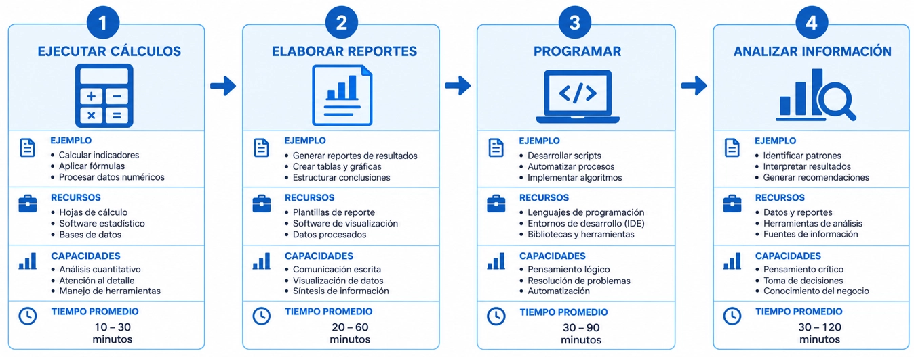
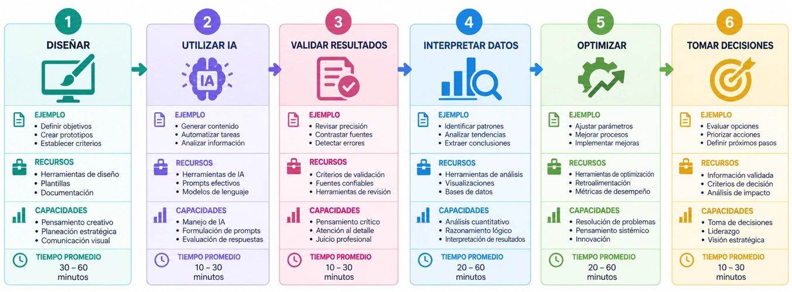
Competencias
El mercado laboral está dejando de preguntar únicamente “¿Qué ingeniería estudiaste?” y comienza a preguntar “¿Qué puedes hacer con tu formación de ingeniería?”. El World Economic Forum señala que la brecha de habilidades es uno de los principales obstáculos para la transformación empresarial: 63% de los empleadores encuestados la identifica como una barrera importante. Entre las competencias con mayor crecimiento esperado aparecen IA, big data y redes/ciberseguridad, junto con pensamiento analítico, creatividad, resiliencia, liderazgo y colaboración.
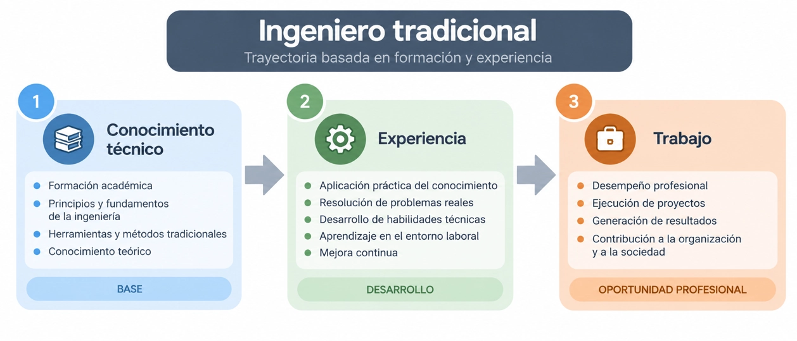
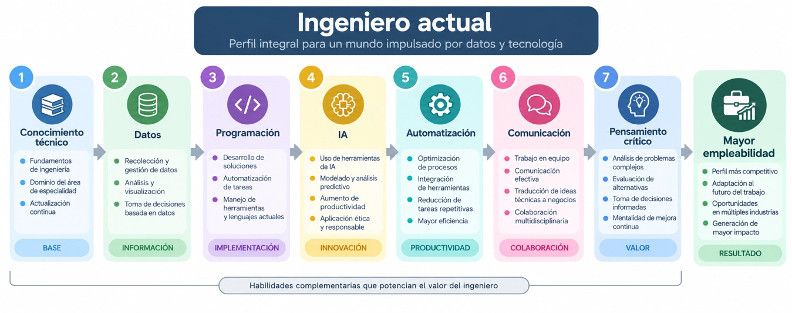
Crecimiento y demanda de especialidades
| Especialidad / ocupación | Crecimiento 2024–2034 |
|---|---|
| Ingeniería industrial | +11.0% |
| Ingeniería mecánica | +9.1% |
| Ingeniería de hardware computacional | +7.3% |
El BLS destaca especialmente a la ingeniería industrial, proyectando alrededor de 38,500 empleos adicionales durante el periodo analizado. Además, aparecen nuevas áreas de oportunidad como ingeniería de datos, IA, Machine Learning Engineering, Cloud Engineering, Platform Engineering, ciberseguridad, automatización, robótica, energía, sostenibilidad, sistemas autónomos y semiconductores.
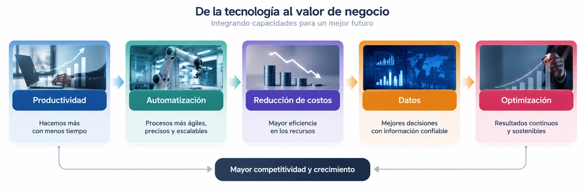
Situación de México
México está experimentando cambios asociados con nearshoring, manufactura avanzada, automatización, Industria 4.0, semiconductores, electrónica, logística, energía e infraestructura.
Compara Carreras 2026 del IMCO muestra que la educación superior continúa representando una ventaja salarial en México, aunque existe un problema importante de vinculación entre lo estudiado y el empleo. El estudio señala además que 54% de los profesionistas mexicanos trabaja fuera de su campo de estudio y que 95% de las organizaciones en México anticipa que la IA modificará sus operaciones.
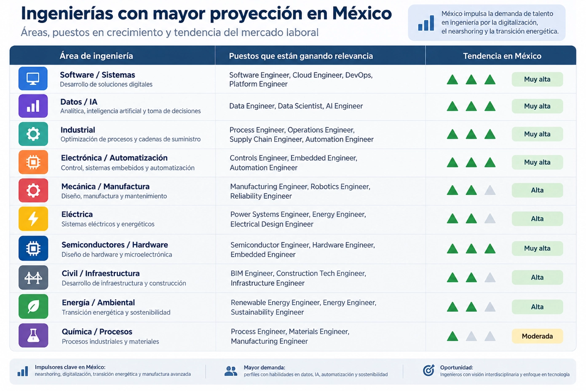
Casos relevantes en México
Ingeniería industrial
El estudio reporta aproximadamente 709,977 personas que estudiaron Ingeniería Industrial y 239,944 estudiantes matriculados. Presenta una tasa de ocupación de 95.7% y 4.3% de desempleo; 45.5% de los ingenieros industriales trabaja en manufactura.
Software y sistemas
Desarrollo de Software presenta 96.8% de ocupación, 3.2% de desempleo, 44.7% de vinculación y un salario promedio de $24,927 MXN mensuales, con 175,126 estudiantes matriculados. El software se utiliza también en comercio, manufactura, servicios sociales, transporte y comunicaciones.
Nearshoring
El nearshoring genera demanda de ingenieros industriales, mecánicos, eléctricos, electrónicos, de automatización, calidad, procesos y manufactura, además de especialistas en supply chain y técnicos especializados.
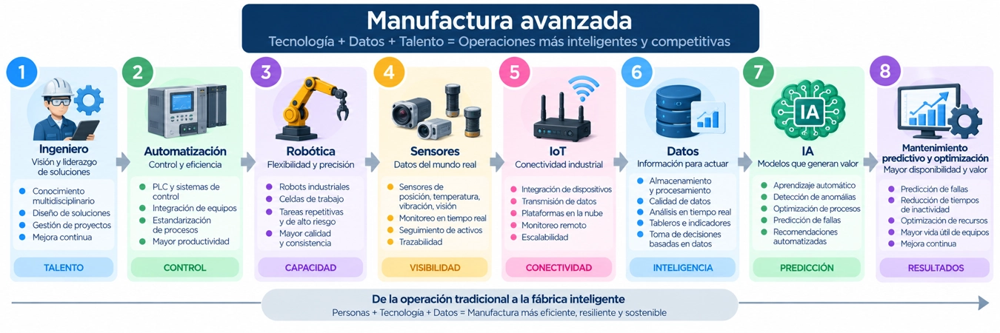
Semiconductores y electrónica
México busca aumentar su participación en cadenas de valor tecnológicas, lo que genera demanda potencial de profesionales de electrónica, eléctrica, sistemas, hardware, embedded, automatización, control, testing, manufactura y calidad.
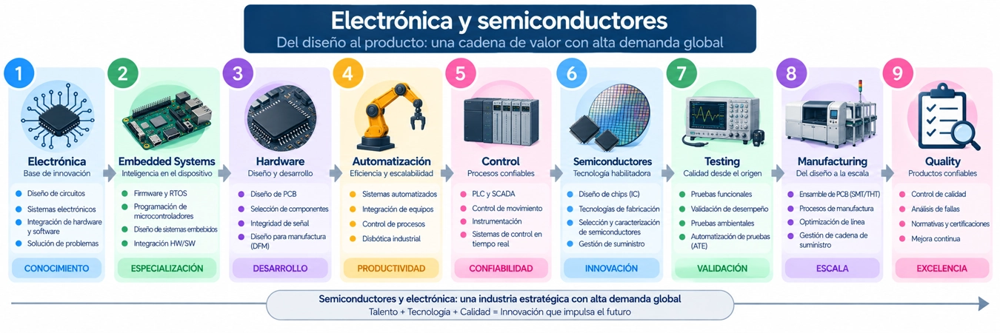
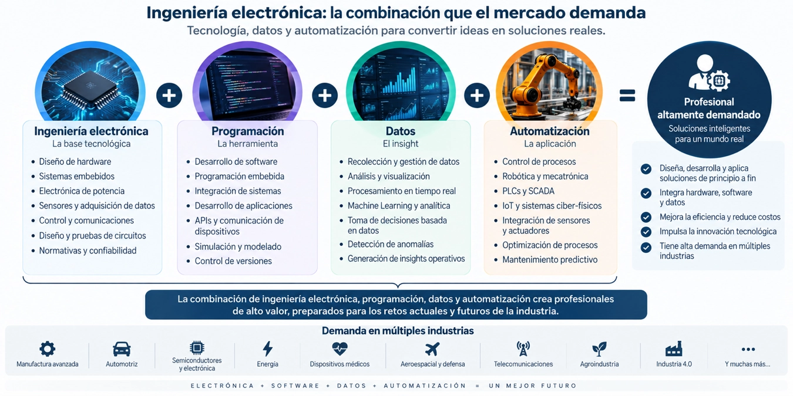
IA y Datos; El reto de los puestos junior
La IA no implica que todas las empresas mexicanas estén contratando AI Engineers. El cambio importante es que la IA empieza a incorporarse a puestos existentes. El IMCO señala que el mercado evoluciona hacia una mayor importancia de las competencias y que uno de cada cinco empleadores en México planea priorizar habilidades sobre credenciales.
El estudio también destaca un reto para los jóvenes: los puestos de entrada pasaron de crecer alrededor de 9% anual en 2021 a registrar variaciones inferiores al 3% entre 2023 y 2025. México puede necesitar más talento tecnológico y de ingeniería, pero eso no significa necesariamente que sea fácil para un recién egresado entrar al mercado.
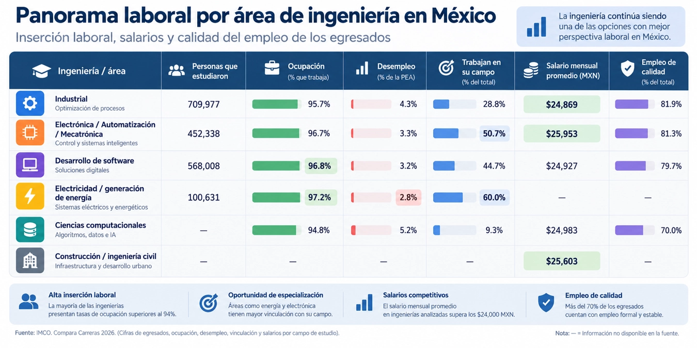
Demanda en México: tres dimensiones
A. Demanda actual
Ocupación · desempleo · informalidad · empleo de calidad · vinculación con el campo.
B. Demanda estructural
¿En qué sectores está trabajando actualmente esa ingeniería? Manufactura, servicios, construcción, etc.
C. Demanda futura
IA, automatización, manufactura avanzada, nearshoring, semiconductores, electrificación, energía, infraestructura, ciberseguridad y datos.
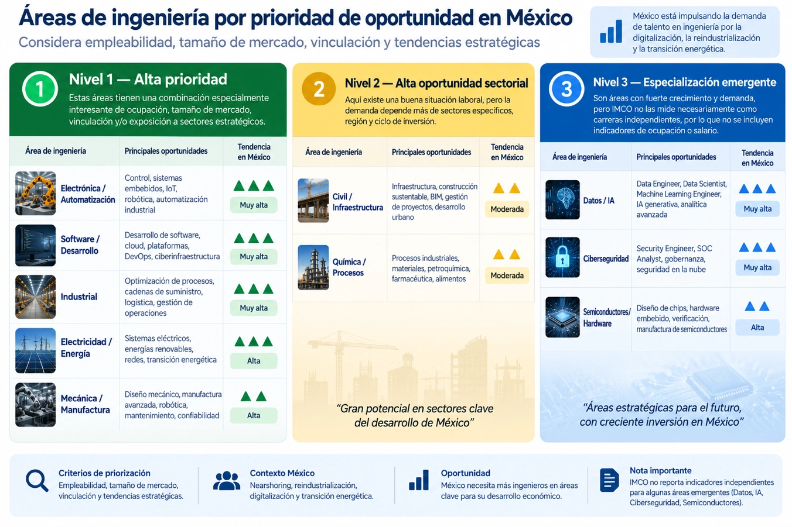
Manufactura Mexicana
La transformación de la manufactura mexicana está creando un punto de convergencia entre Ingeniería Industrial, Mecánica, Electrónica, Automatización y Software.
| Área | Participación en manufactura |
|---|---|
| Ingeniería industrial | 45% |
| Electrónica / Automatización | 39.5% |
| Mecánica | 37.7% |
| Software | 14.2% |
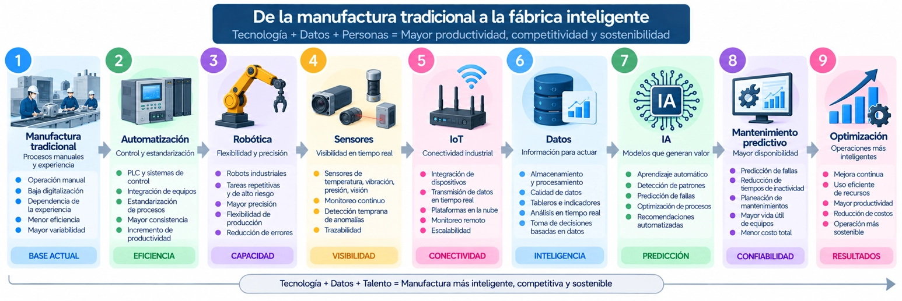
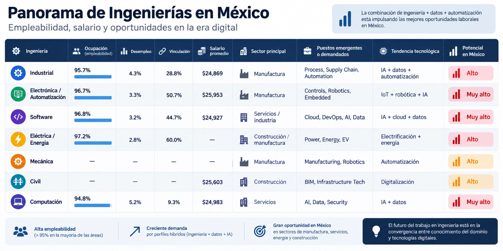
Ingeniería y tecnología en México
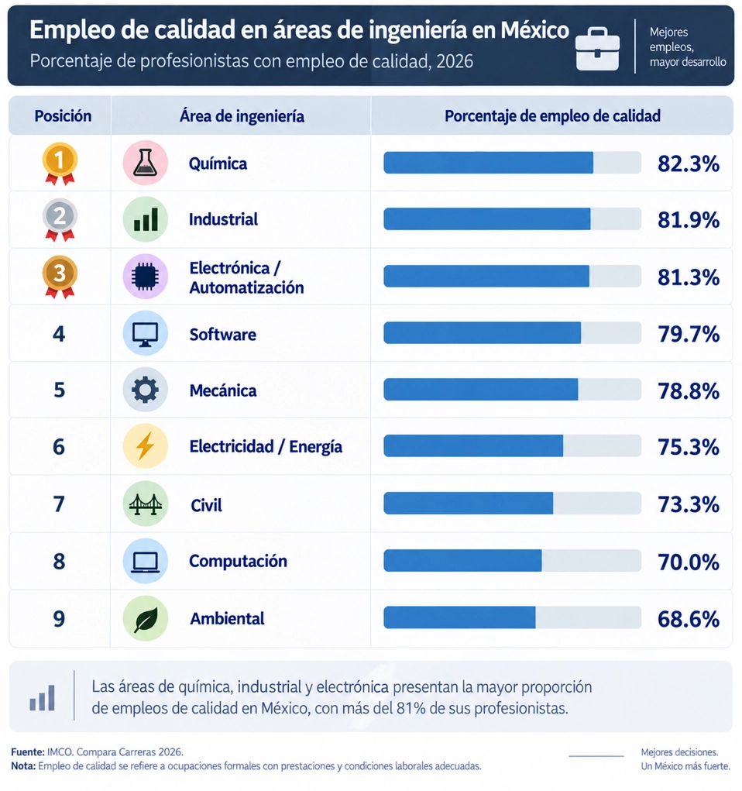

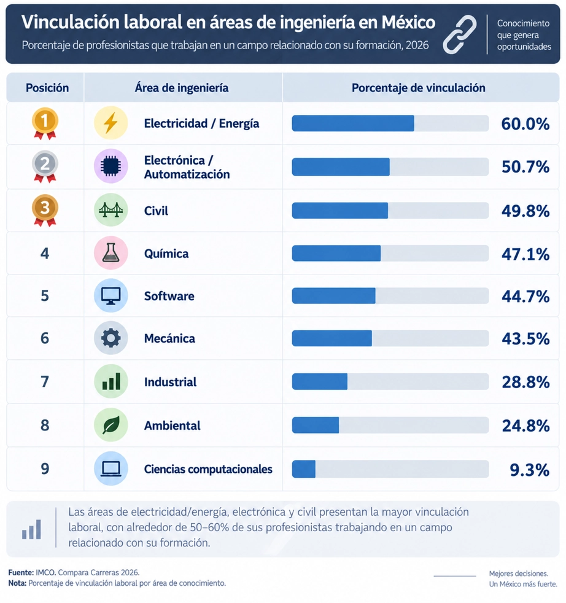
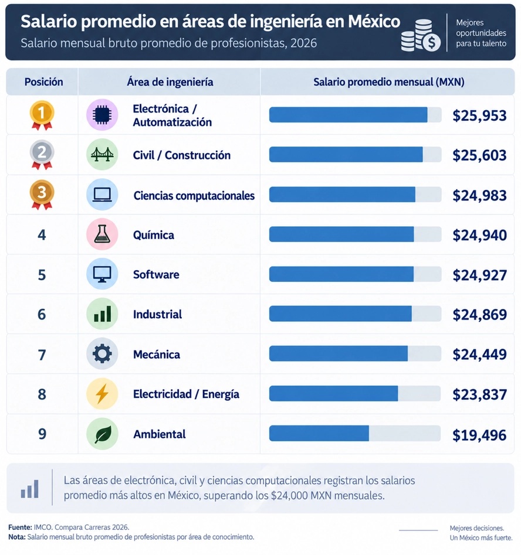

Puestos, tecnologías y tendencias
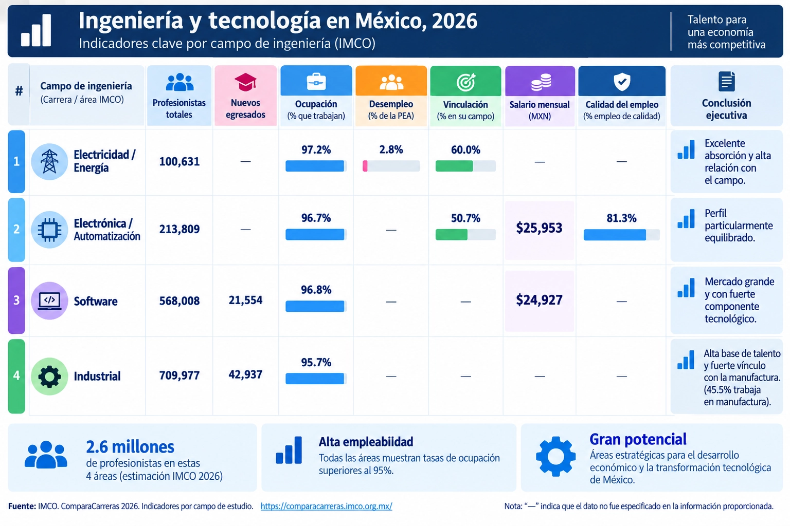
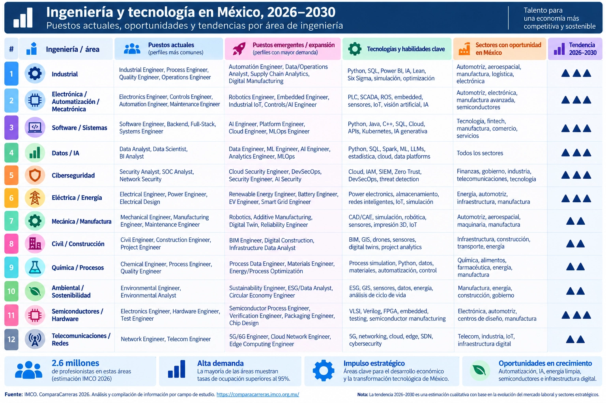
Ingenierías y puestos con mayor demanda
La evidencia disponible concentra la demanda especialmente en cinco grandes áreas: tecnología/software/datos; automatización e ingeniería industrial; mecánica y manufactura avanzada; electrónica, eléctrica y semiconductores; y energía y transición energética.
1. Software, sistemas y computación
Software Engineer · Backend Engineer · Full-Stack Engineer · Cloud Engineer · DevOps Engineer · Platform Engineer · AI Engineer · Machine Learning Engineer · Systems Engineer.
El BLS proyecta 15.8% de crecimiento para software developers entre 2024 y 2034, equivalente a unos 267,700 empleos adicionales.
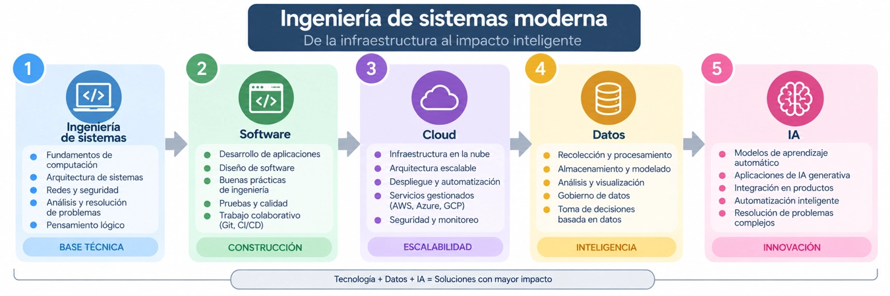
2. Ingeniería de datos e inteligencia artificial
Data Engineer · Data Scientist · Machine Learning Engineer · AI Engineer · Analytics Engineer · MLOps Engineer · AI Research Engineer. BLS proyecta 33.5% de crecimiento para Data Scientist y 21.5% para Operations Research Analysts entre 2024 y 2034.
3. Ciberseguridad
Security Engineer · Cybersecurity Engineer · Information Security Analyst · Cloud Security Engineer · Security Architect · SOC Engineer · Application Security Engineer. Los analistas de seguridad de la información tienen una proyección de 28.5% de crecimiento.
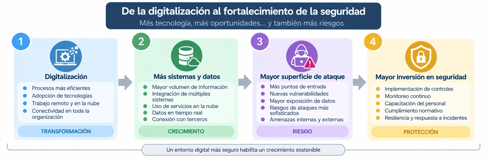
4. Ingeniería industrial
Industrial Engineer · Process Engineer · Operations Engineer · Supply Chain Engineer · Continuous Improvement Engineer · Manufacturing Engineer · Operations Research Analyst · Automation Engineer. La ingeniería industrial converge con Data Science, IA, automatización y Operations Research.
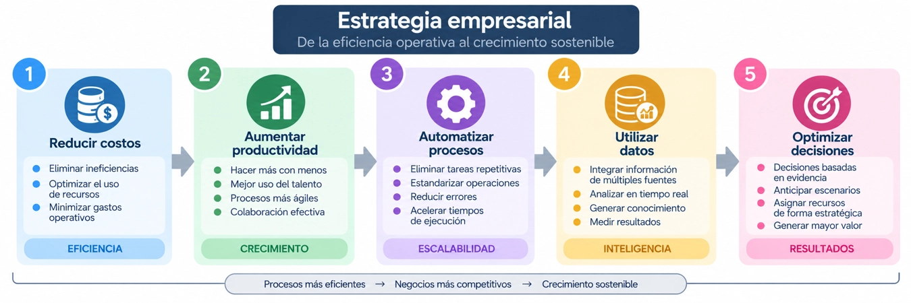
5. Ingeniería mecánica y manufactura avanzada
Mechanical Engineer · Manufacturing Engineer · Robotics Engineer · Automation Engineer · Controls Engineer · Mechatronics Engineer · Reliability Engineer. El BLS relaciona el crecimiento de ingeniería industrial y mecánica con maquinaria automatizada, robótica colaborativa, impresión 3D y automatización de procesos.
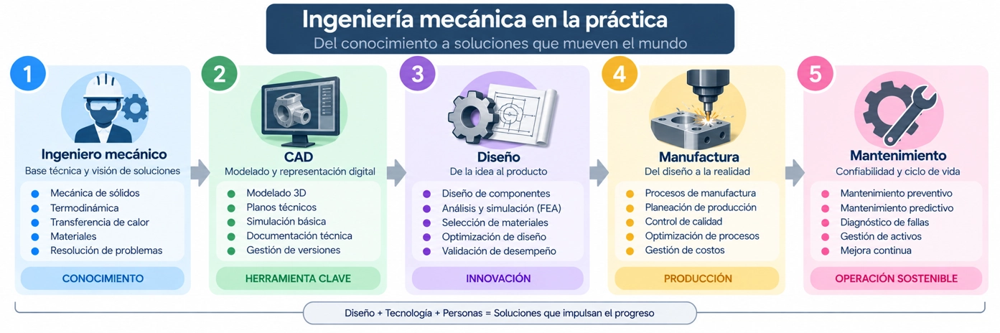
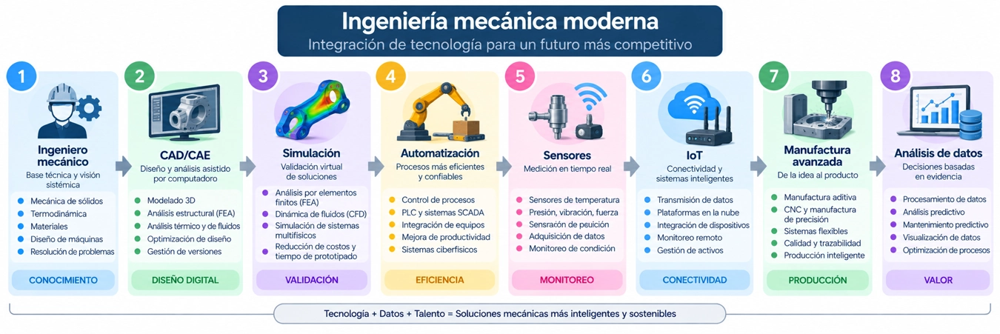
6. Ingeniería eléctrica, electrónica y semiconductores
Electrical Engineer · Electronics Engineer · Power Systems Engineer · Controls Engineer · Semiconductor Engineer · Hardware Engineer · Embedded Systems Engineer · Electrical Design Engineer. El BLS proyecta 6.2% de crecimiento para electronics engineers (except computer) entre 2024 y 2034.
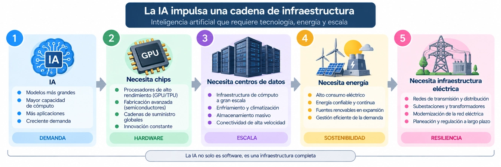
7. Energía e ingeniería ambiental
Renewable Energy Engineer · Energy Engineer · Solar Engineer · Wind Engineer · Battery Engineer · Power Systems Engineer · Sustainability Engineer · Environmental Engineer. El estudio reporta proyecciones BLS de 180.2% para generación solar eléctrica y 81.4% para generación eólica entre 2024 y 2034 en EE. UU.
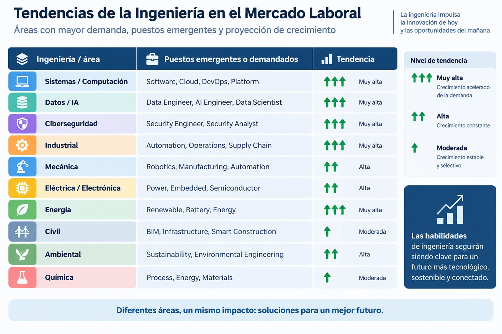
La combinación de conocimientos que demanda el mercado
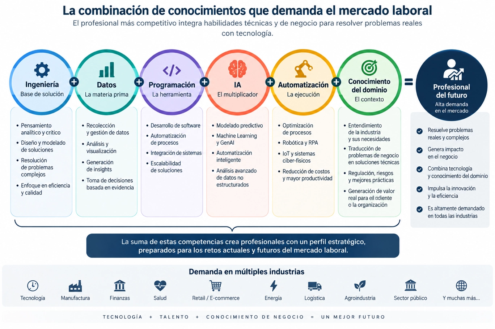
Eso explica por qué un ingeniero tradicional puede tener buenas perspectivas, pero un ingeniero capaz de combinar su especialidad con tecnología digital puede acceder a un mercado laboral considerablemente más amplio.
En contraste, Ingeniería Industrial tiene una enorme presencia en el mercado —709,977 personas con esa formación y 239,944 estudiantes matriculados— pero solamente 28.8% trabaja en algo relacionado con lo que estudió, según la clasificación utilizada en el estudio.
Índice de Oportunidad Laboral de Ingeniería 2026–2030
La proyección no sustituye los datos laborales observados: los complementa con una evaluación prospectiva de las transformaciones que pueden modificar la demanda de ingeniería en México. El documento base señala que la competencia futura será cada vez más entre perfiles capaces de integrar ingeniería, tecnología y conocimiento sectorial.
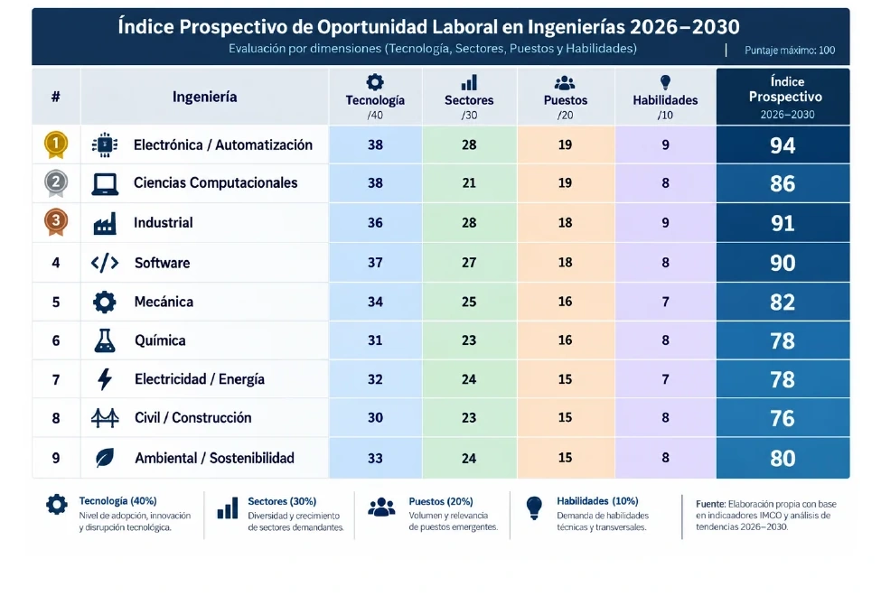
Fuentes base: IMCO Tendencias educativas y del empleo 2026 y WEF Future of Jobs Report 2025, especialmente sus apartados de México, empleos y habilidades. IMCO señala que 95% de las organizaciones esperan cambios operativos por IA, mientras que el WEF identifica IA/big data, redes/ciberseguridad y alfabetización tecnológica entre las habilidades de mayor crecimiento.
1. Fórmula general
L representa la situación laboral observada en México y P representa la exposición de cada área a las transformaciones 2026–2030. Los indicadores laborales se construyen con información de IMCO/ENOE; el componente prospectivo es una construcción analítica del estudio, no un indicador oficial de IMCO.
2. Situación laboral actual: componente L
La dimensión laboral utiliza seis indicadores de IMCO. Cada indicador tiene un peso explícito y después se normaliza dentro de la muestra de nueve carreras para hacer comparables porcentajes, salarios y demás escalas.
| Indicador | Peso | Tratamiento |
|---|---|---|
| Ocupación | 20% | Más es mejor |
| Desempleo | 15% | Menos es mejor |
| Vinculación con estudios | 20% | Más es mejor |
| Informalidad | 15% | Menos es mejor |
| Empleo de calidad | 15% | Más es mejor |
| Salario | 15% | Más es mejor |
La vinculación es especialmente relevante porque IMCO la incorpora en 2026 como una medida de la proporción de personas ocupadas cuya ocupación está directamente relacionada con la carrera estudiada.
3. Normalización Min–Max
No se pueden sumar directamente variables con escalas distintas. Por ello, el estudio utiliza normalización Min–Max dentro de la muestra de nueve carreras.
Cuando más es mejor
Cuando menos es mejor
El ejemplo del documento para Electrónica / Automatización obtiene un indicador laboral de 87.8/100 después de normalizar ocupación, desempleo, vinculación, informalidad, empleo de calidad y salario.
4. Potencial 2026–2030: componente P
El potencial se estructura en cuatro dimensiones. La evidencia del documento combina señales mexicanas de IMCO/WEF con la identificación de puestos y habilidades de crecimiento hacia 2030.
| Componente | Peso | Máximo |
|---|---|---|
| T — Transformación tecnológica | 40% | 40 |
| S — Sectores estratégicos en México | 30% | 30 |
| J — Puestos emergentes | 20% | 20 |
| H — Habilidades futuras | 10% | 10 |
5. T — Transformación tecnológica /40
Se evalúan cuatro señales, cada una con un máximo de 10 puntos: exposición a IA/datos, exposición a automatización/robótica, digitalización de procesos/sistemas e intensidad tecnológica futura.
| Ingeniería | IA/datos | Automatización | Digitalización | Intensidad | T /40 |
|---|---|---|---|---|---|
| Electrónica / Automatización | 9 | 10 | 10 | 9 | 38 |
| Software | 10 | 8 | 10 | 9 | 37 |
| Industrial | 9 | 10 | 9 | 8 | 36 |
| Química | 7 | 7 | 8 | 9 | 31 |
| Mecánica | 7 | 10 | 8 | 9 | 34 |
| Electricidad / Energía | 7 | 8 | 9 | 8 | 32 |
| Civil / Construcción | 6 | 7 | 9 | 8 | 30 |
| Ciencias Computacionales | 10 | 8 | 10 | 10 | 38 |
| Ambiental / Sostenibilidad | 8 | 7 | 9 | 9 | 33 |
Para México, el documento destaca que 95% de las empresas espera que la IA transforme sus operaciones, 63% prevé mayor utilización de robótica y 82% busca acelerar la automatización.
6. S — Sectores estratégicos en México /30
Esta dimensión mide exposición a manufactura/nearshoring, energía/infraestructura, servicios digitales, transición verde y diversificación sectorial.
| Ingeniería | Manufactura /8 | Energía /6 | Digital /6 | Verde /5 | Diversificación /5 | S /30 |
|---|---|---|---|---|---|---|
| Electrónica / Automatización | 8 | 4 | 5 | 3 | 8 | 28 |
| Software | 5 | 3 | 6 | 3 | 10 | 27 |
| Industrial | 8 | 4 | 4 | 4 | 8 | 28 |
| Química | 7 | 4 | 3 | 5 | 4 | 23 |
| Mecánica | 8 | 4 | 3 | 3 | 7 | 25 |
| Electricidad / Energía | 5 | 6 | 3 | 5 | 5 | 24 |
| Civil / Construcción | 4 | 5 | 3 | 5 | 6 | 23 |
| Ciencias Computacionales | 4 | 3 | 6 | 3 | 5* | 21 |
| Ambiental / Sostenibilidad | 4 | 4 | 3 | 5 | 8 | 24 |
*El PDF muestra originalmente 12 puntos en diversificación para Ciencias Computacionales, aunque el máximo definido es 5. Al mantener estrictamente la escala, S=21. Esta corrección también cambia el potencial de esa área frente a una versión preliminar del modelo.
7. J — Puestos emergentes /20
La pregunta deja de ser solamente “¿qué carrera es?” y pasa a ser “¿qué tan directamente conecta con puestos que están creciendo?”.
| Ingeniería | Puestos emergentes principales | J /20 |
|---|---|---|
| Electrónica / Automatización | Automation, Controls, Robotics, Embedded, IoT | 19 |
| Software | Software, Cloud, DevOps, AI, MLOps | 18 |
| Industrial | Operations, Supply Chain, Automation, Optimization, Data/Operations | 18 |
| Química | Process, Materials, Pharma, Battery, Semiconductor | 16 |
| Mecánica | Robotics, Manufacturing, Maintenance, Digital Twin | 16 |
| Electricidad / Energía | Energy, Renewable, EV, Battery, Smart Grid | 15 |
| Civil / Construcción | BIM, Digital Construction, Infrastructure, Project Data | 15 |
| Ciencias Computacionales | AI, ML, Big Data, Algorithms, Cybersecurity | 19 |
| Ambiental / Sostenibilidad | ESG, Sustainability, Environmental Data, Circular Economy | 15 |
8. H — Habilidades futuras /10
El componente recoge capacidades cuya importancia aumenta hacia 2030: IA y big data, redes y ciberseguridad, alfabetización tecnológica, pensamiento creativo, resiliencia/flexibilidad/agilidad, liderazgo y responsabilidad ambiental.
| Ingeniería | Habilidades principales | H /10 |
|---|---|---|
| Electrónica / Automatización | AI, programación, control, sistemas, analytical thinking | 9 |
| Software | AI, programación, cloud, data, cybersecurity | 8 |
| Industrial | Data, AI, systems thinking, optimization, leadership | 9 |
| Química | Data, automation, materials, analytical thinking | 8 |
| Mecánica | Automation, robotics, CAD, data, systems | 7 |
| Electricidad / Energía | Digital systems, energy tech, data, sustainability | 7 |
| Civil / Construcción | BIM, digitalization, project management, sustainability | 8 |
| Ciencias Computacionales | AI, Big Data, algorithms, cybersecurity, programming | 8 |
| Ambiental / Sostenibilidad | ESG, environmental data, sustainability, systems thinking | 8 |
9. Matriz prospectiva consolidada
Con la escala corregida, el componente prospectivo queda:
| # | Ingeniería | T /40 | S /30 | J /20 | H /10 | P /100 |
|---|---|---|---|---|---|---|
| 1 | Electrónica / Automatización | 38 | 28 | 19 | 9 | 94 |
| 2 | Industrial | 36 | 28 | 18 | 9 | 91 |
| 3 | Software | 37 | 27 | 18 | 8 | 90 |
| 4 | Ciencias Computacionales | 38 | 21 | 19 | 8 | 86 |
| 5 | Mecánica | 34 | 25 | 16 | 7 | 82 |
| 6 | Ambiental / Sostenibilidad | 33 | 24 | 15 | 8 | 80 |
| 7 | Química | 31 | 23 | 16 | 8 | 78 |
| 8 | Electricidad / Energía | 32 | 24 | 15 | 7 | 78 |
| 9 | Civil / Construcción | 30 | 23 | 15 | 8 | 76 |
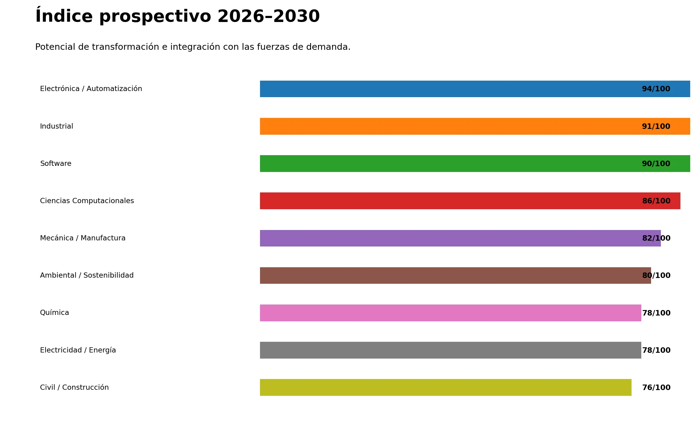
10. De carreras a áreas emergentes
El segundo documento también cambia la unidad de análisis: además de comparar carreras, identifica áreas y especializaciones donde se concentra la oportunidad. Esto permite observar que el mercado puede demandar una combinación de ingeniería con datos, automatización, ciberseguridad, semiconductores, energía o sostenibilidad.
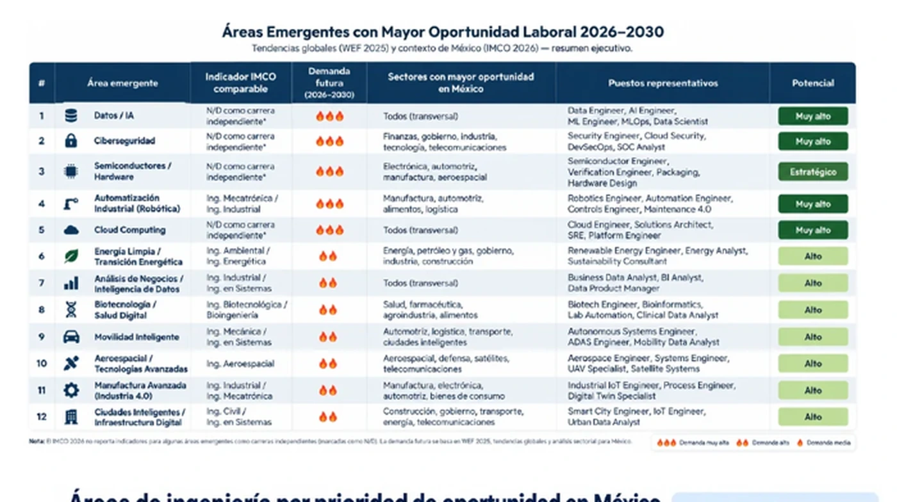
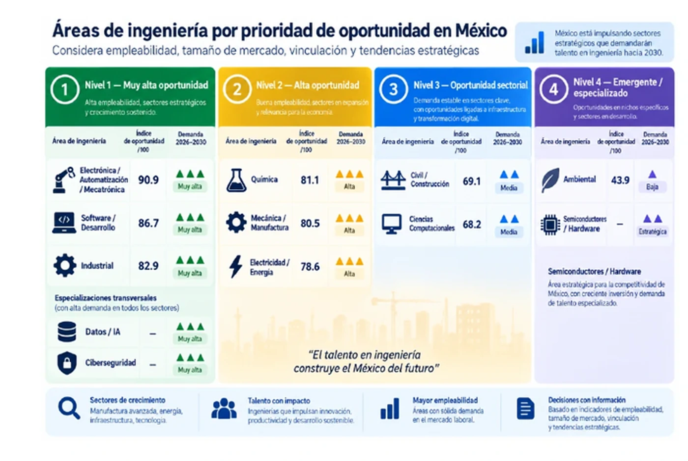
11. Evidencia por área de ingeniería
| Área | Señal de transformación | Puestos destacados | P /100 |
|---|---|---|---|
| Electrónica / Mecatrónica | Automatización, robótica, IoT e IA; fuerte conexión con manufactura y semiconductores. | Automation, Controls, Robotics, Embedded, IoT, Vision Systems | 94 |
| Software | IA, cloud, datos y digitalización transversal. | Software, Cloud, DevOps, Data, AI, MLOps | 90 |
| Industrial | Automatización, analítica, optimización, manufactura y nearshoring. | Operations, Process, Supply Chain, Manufacturing, Automation | 91 |
| Química | Procesos, materiales, farmacéutica, energía, baterías y semiconductores. | Process, Materials, Pharma, Battery, Semiconductor | 78 |
| Mecánica / Manufactura | Robótica, automatización, simulación y manufactura avanzada. | Manufacturing, Robotics, Reliability, Digital Twin | 82 |
| Electricidad / Energía | Electrificación, almacenamiento, EV, infraestructura eléctrica y smart grid. | Energy, Renewable, Battery, EV, Smart Grid | 78 |
| Civil / Construcción | Digitalización de infraestructura, BIM, GIS, sensores y digital twins. | BIM, Infrastructure, Digital Construction, Project Data | 76 |
| Ciencias Computacionales | IA, ML, Big Data, algoritmos, software y ciberseguridad. | AI, ML, Big Data, Algorithms, Cybersecurity | 86* |
| Ambiental / Sostenibilidad | Transición verde, datos ambientales, eficiencia y economía circular. | Sustainability, ESG, Environmental Data, Circular Economy | 80 |
*86 corresponde a la versión corregida de la matriz prospectiva, después de limitar la diversificación sectorial de Ciencias Computacionales al máximo definido de 5 puntos.
Variables para evaluar una carrera o área
| Variable | Pregunta |
|---|---|
| Volumen | ¿Cuántos puestos existen? |
| Crecimiento | ¿Está aumentando la cantidad de puestos? |
| Especialización | ¿Qué conocimientos requiere? |
| Salario | ¿Cuánto paga el mercado? |
| Oferta de talento | ¿Cuántos egresados compiten? |
| Vinculación | ¿Los egresados trabajan realmente en su campo? |
| Tecnología | ¿Qué tecnologías están impulsando la demanda? |
| Proyección | ¿Continuará creciendo? |
Conclusión
La evidencia 2026–2030 refuerza una conclusión central: México está demandando una combinación de ingeniería tradicional y capacidades digitales. La manufactura, infraestructura, energía y servicios están incorporando automatización, datos, software e inteligencia artificial, transformando los perfiles profesionales y creando una demanda creciente por ingenieros capaces de integrar conocimientos técnicos con tecnologías digitales.